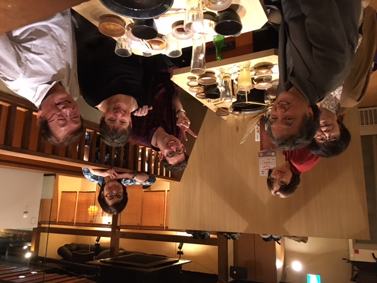

On May 12, APA hosted its first international guest as part of the Associated Chamber Music Players’ (ACMP) new Going Places initiative! ACMP established Going Places in late 2018 as a way to broker opportunities for members to play chamber music while traveling abroad. As of this writing there are contacts in six countries: Germany, Belgium, Italy, Switzerland, the United Kingdom and Japan. Japan’s POC is Kazumichi Yoshida, organizer of APA’s Chuosen group, and also a member of ACMP’s International Ambassadors Council. With a strong belief in the power of music to bring people of diverse cultures together, Kaaz has been organizing an International Music festival each spring, so Going Places was a perfect fit for him.
APA’s inaugural event began with an email from Susan Alexander, an American pianist, in February. She would be visiting her son, who teaches English in Tokyo, from late April to mid May. Could anything be arranged? Indeed it could, and a few months later, the group assembled at the JR Musashi Sakai train station and walked over to the Civic Center, where Kaaz had reserved the music room. The players got right to work, for there was a lot of music to fit into four hours: Dvorak quintet Op. 81, Dohnanyi quintet Op 1, and Brahms quartet, Op. 60, for which musicians included Sayoko Yamashita and Kaaz on violin, Takeko Kubodera on viola, and Masako Usuda on cello. Then, during the last hour, Takeko’s husband Toshiro joined in for some Mozart and Schubert trios and Susan’s son, Jeremy, turned pages.
 >
>
Refreshments afforded another fun opportunity for cultural exchange. Susan introduced the group to some cookies she’d brought with her from the US that combined chocolate and mint, which was a new taste for the Japanese players. She, in turn, got to sample a confection of ume plum and natto, definitely not a combination found on American shelves! At 5:00 it was time to adjourn for dinner at a nearby shabu shabu restaurant, another new experience for Susan. Many trays of meat, glasses of umeshu, and cups of sake later, it was, sadly, time to say goodbye, and the participants dispersed to various stations along the Chuosen. It was a fantastic afternoon and evening, and everyone is hopeful that there will be more opportunities to play together in the future!
>Copyright (C) Amateur Music Player’s Association, Japan (APA).All rights reserved.